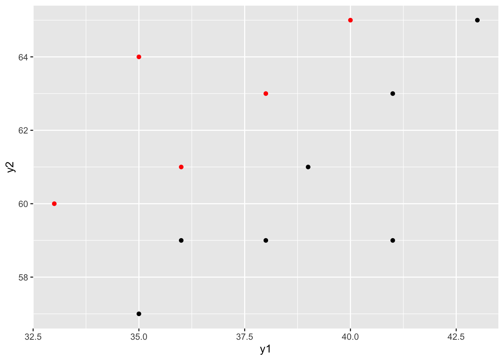
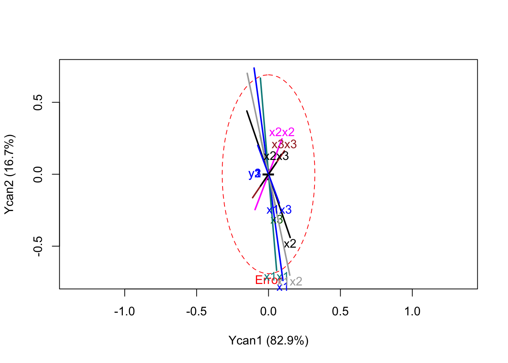
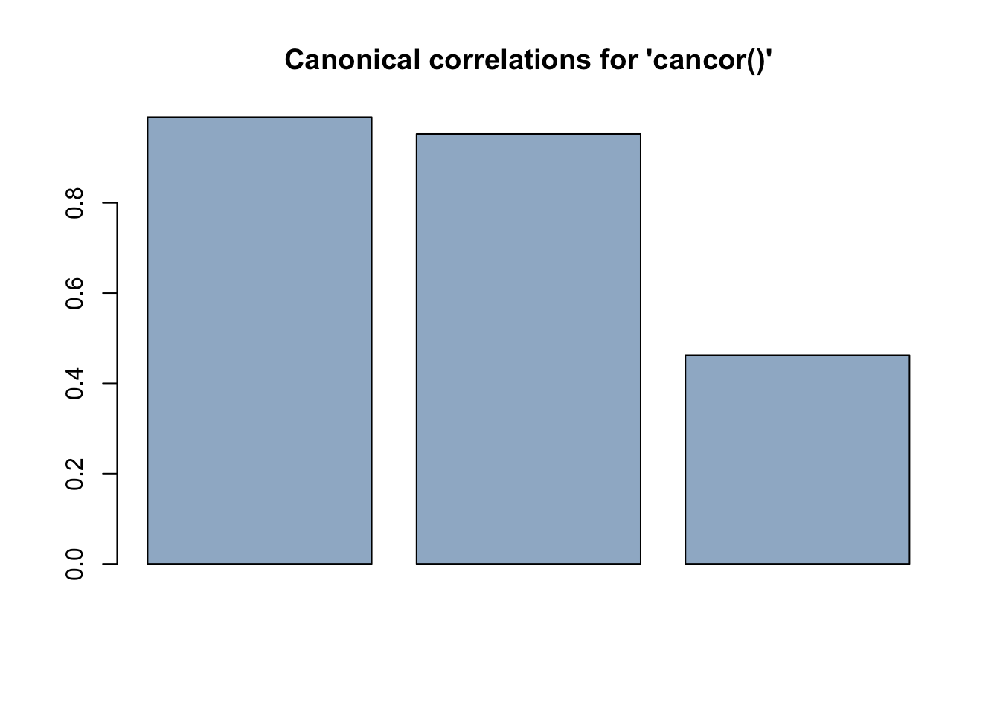

Chapter 10 Canonical Correlation
10.1 Introduction
10.2 Canonical Correlations and Canonical Variates
10.3 Properties of Canonical Correlations
10.3.1 Example 11.3
For the chemical data of Table \(10.1\) we obtain the canonical correlations and illustrate property \(2\). We consider the extended set of nine \(x's\), as in Example \(10.5.2\). The matrix \(R_{yx}\) of correlations between the \(y's\) and the \(x's\) is:
experiment_number <- seq(1:19)
y1 <- c(
41.5, 33.8, 27.7, 21.7, 19.9, 15, 12.2, 4.3, 19.3, 6.4, 37.6, 18, 26.3,9.9, 25, 14.1, 15.2, 15.9, 19.6
)
y2 <- c(
45.9, 53.3, 57.5, 58.8, 60.6, 58, 58.6, 52.4, 56.9, 55.4,46.9, 57.3, 55, 58.9, 50.3, 61.1, 62.9, 60, 60.6
)
y3 <- c(
11.2, 11.2, 12.7, 16, 16.2, 22.6, 24.5, 38, 21.3, 30.8, 14.7, 22.2, 18.3, 28, 22.1, 23, 20.7,22.1, 19.3
)
x1 <- c(
162, 162, 162, 162, 172, 172, 172, 172, 167, 177, 157, 167, 167, 167, 167,177,177, 160, 160
)
x2 <- c(
23, 23, 30, 30, 25, 25, 30, 30, 27.5, 27.5, 27.5, 32.5, 22.5, 27.5, 27.5, 20, 20, 34, 34
)
x3 <- c(
3, 8, 5, 8, 5, 8,5, 8, 6.5, 6.5, 6.5, 6.5, 6.5, 9.5, 3.5, 6.5, 6.5, 7.5, 7.5
)
x1x1 <- x1*x1
x2x2 <- x2*x2
x3x3 <- x3*x3
x1x2 <- x1*x2
x1x3 <- x1*x3
x2x3 <- x2*x3
chemicalReaction <- data.frame(experiment_number, y1, y2, y3, x1, x2, x3, x1x1, x2x2, x3x3, x1x2, x1x3, x2x3)| experiment_number | y1 | y2 | y3 | x1 | x2 | x3 | x1x1 | x2x2 | x3x3 | x1x2 | x1x3 | x2x3 |
|---|---|---|---|---|---|---|---|---|---|---|---|---|
| 1 | 41.5 | 45.9 | 11.2 | 162 | 23.0 | 3.0 | 26244 | 529.00 | 9.00 | 3726.0 | 486.0 | 69.00 |
| 2 | 33.8 | 53.3 | 11.2 | 162 | 23.0 | 8.0 | 26244 | 529.00 | 64.00 | 3726.0 | 1296.0 | 184.00 |
| 3 | 27.7 | 57.5 | 12.7 | 162 | 30.0 | 5.0 | 26244 | 900.00 | 25.00 | 4860.0 | 810.0 | 150.00 |
| 4 | 21.7 | 58.8 | 16.0 | 162 | 30.0 | 8.0 | 26244 | 900.00 | 64.00 | 4860.0 | 1296.0 | 240.00 |
| 5 | 19.9 | 60.6 | 16.2 | 172 | 25.0 | 5.0 | 29584 | 625.00 | 25.00 | 4300.0 | 860.0 | 125.00 |
| 6 | 15.0 | 58.0 | 22.6 | 172 | 25.0 | 8.0 | 29584 | 625.00 | 64.00 | 4300.0 | 1376.0 | 200.00 |
| 7 | 12.2 | 58.6 | 24.5 | 172 | 30.0 | 5.0 | 29584 | 900.00 | 25.00 | 5160.0 | 860.0 | 150.00 |
| 8 | 4.3 | 52.4 | 38.0 | 172 | 30.0 | 8.0 | 29584 | 900.00 | 64.00 | 5160.0 | 1376.0 | 240.00 |
| 9 | 19.3 | 56.9 | 21.3 | 167 | 27.5 | 6.5 | 27889 | 756.25 | 42.25 | 4592.5 | 1085.5 | 178.75 |
| 10 | 6.4 | 55.4 | 30.8 | 177 | 27.5 | 6.5 | 31329 | 756.25 | 42.25 | 4867.5 | 1150.5 | 178.75 |
| 11 | 37.6 | 46.9 | 14.7 | 157 | 27.5 | 6.5 | 24649 | 756.25 | 42.25 | 4317.5 | 1020.5 | 178.75 |
| 12 | 18.0 | 57.3 | 22.2 | 167 | 32.5 | 6.5 | 27889 | 1056.25 | 42.25 | 5427.5 | 1085.5 | 211.25 |
| 13 | 26.3 | 55.0 | 18.3 | 167 | 22.5 | 6.5 | 27889 | 506.25 | 42.25 | 3757.5 | 1085.5 | 146.25 |
| 14 | 9.9 | 58.9 | 28.0 | 167 | 27.5 | 9.5 | 27889 | 756.25 | 90.25 | 4592.5 | 1586.5 | 261.25 |
| 15 | 25.0 | 50.3 | 22.1 | 167 | 27.5 | 3.5 | 27889 | 756.25 | 12.25 | 4592.5 | 584.5 | 96.25 |
| 16 | 14.1 | 61.1 | 23.0 | 177 | 20.0 | 6.5 | 31329 | 400.00 | 42.25 | 3540.0 | 1150.5 | 130.00 |
| 17 | 15.2 | 62.9 | 20.7 | 177 | 20.0 | 6.5 | 31329 | 400.00 | 42.25 | 3540.0 | 1150.5 | 130.00 |
| 18 | 15.9 | 60.0 | 22.1 | 160 | 34.0 | 7.5 | 25600 | 1156.00 | 56.25 | 5440.0 | 1200.0 | 255.00 |
| 19 | 19.6 | 60.6 | 19.3 | 160 | 34.0 | 7.5 | 25600 | 1156.00 | 56.25 | 5440.0 | 1200.0 | 255.00 |
if(!require("magrittr")){
install.packages("magrittr")
library(magrittr)
}
if(!require("dplyr")){
install.packages("dplyr")
library(dplyr)
}
Y<-chemicalReaction%>% select(2:4)
X <- chemicalReaction%>% select(5:13)\(R_{yx}\):
if(!require("CCA")){
install.packages("CCA")
library(CCA)
}
correl<-matcor(X, Y)
correl$XYcor[10:12,1:9]## x1 x2 x3 x1x1 x2x2 x3x3
## y1 -0.6769387 -0.22472586 -0.4525396 -0.6753103 -0.2319800 -0.4219442
## y2 0.4039510 0.07998377 0.3927312 0.4039424 0.1192504 0.3304715
## y3 0.5768977 0.22559034 0.3615240 0.5751086 0.2195773 0.3588194
## x1x2 x1x3 x2x3
## y1 -0.4100793 -0.5475239 -0.4547819
## y2 0.1634465 0.4399037 0.3324060
## y3 0.3958988 0.4478048 0.3929819Plotting out the \(R_{xx}\), \(R_{yy}\), \(R_{xy}\) and \(R_{yx}\) in that order:

The three canonical correlations are obtain via the cancor package in R.
## [1] 0.9899310 0.9527848 0.4625105Therefore, the three canonical correlations are:
\[ r_1= 0.9899310\]
\[r_2= 0.9527848\]
\[r_3=0.4625105\]
Squares of the three canonical correlations:
## [1] 0.9799633 0.9077988 0.2139159We could also use the library candiscto obtain the same results as as shown above:
##
## Canonical correlation analysis of:
## 9 X variables: x1, x2, x3, x1x1, x2x2, x3x3, x1x2, x1x3, x2x3
## with 3 Y variables: y1, y2, y3
##
## CanR CanRSQ Eigen percent cum scree
## 1 0.9899 0.9800 48.9084 82.859 82.86 ******************************
## 2 0.9528 0.9078 9.8458 16.680 99.54 ******
## 3 0.4625 0.2139 0.2721 0.461 100.00
##
## Test of H0: The canonical correlations in the
## current row and all that follow are zero
##
## CanR LR test stat approx F numDF denDF Pr(> F)
## 1 0.98993 0.00145 6.5366 27 21.086 2.085e-05 ***
## 2 0.95278 0.07248 2.7145 16 16.000 0.02692 *
## 3 0.46251 0.78608 0.3499 7 9.000 0.90997
## ---
## Signif. codes: 0 '***' 0.001 '**' 0.01 '*' 0.05 '.' 0.1 ' ' 1
##
## Raw canonical coefficients
##
## X variables:
## Xcan1 Xcan2 Xcan3
## x1 -0.8060287 6.159676 -2.0112121
## x2 -1.3819664 4.186903 -5.7187343
## x3 -1.0104388 4.880524 -20.0486124
## x1x1 0.0012771 -0.015712 0.0023216
## x2x2 0.0053844 0.014672 0.0470928
## x3x3 -0.0281938 -0.043170 0.0479841
## x1x2 0.0060346 -0.029695 0.0183799
## x1x3 0.0084197 -0.023462 0.1144431
## x2x3 -0.0094751 -0.014430 0.0231488
##
## Y variables:
## Ycan1 Ycan2 Ycan3
## y1 0.154140 0.44862 0.58166
## y2 0.044698 0.59979 0.47236
## y3 0.069491 0.46532 0.76455
## Vector scale factor set to 0
For the relative size if the square canonical correlations, we would consider only the first two to be important. A hypothesis for the significance of each is carried out in Example 11.4.2.
To confirm the property 2 holds in this case, we compare \(r_1=0.9899\) to the individual correlations and the multiple correlations. We first note that \(0.9899\) is greater than individual correlations, since (the absolute value of) the largest correlation in \(R_{yx}\) is 0.68.
## x1 x2 x3 x1x1 x2x2 x3x3 x1x2 x1x3 x2x3
## y1 FALSE FALSE FALSE FALSE FALSE FALSE FALSE FALSE FALSE
## y2 FALSE FALSE FALSE FALSE FALSE FALSE FALSE FALSE FALSE
## y3 FALSE FALSE FALSE FALSE FALSE FALSE FALSE FALSE FALSEThe multiple correlation \(R_{(y_j|x)}\) of each \(y_j\) with the \(x's\) is given by:
\[R_{(y_1|x)}=0.987\] \[R_{(y_2|x)}=0.921\] \[R_{(y_3|x)}=0.906\] and for the multiple correlation of each \(x\) with \(y's\) we have:
\[R_{(x_1|y)}=0.691\] \[R_{(x_2|y)}=0.237\]
\[R_{(x_3|y)}=0.507\] \[R_{(x_1x_2|y)}=0.432\] \[R_{(x_1x_3|y)}=0.585\] \[R_{(x_2x_3|y)}=0.482\] \[R_{(x_1^2|y)}=0.690\] \[R_{(x_2^2|y)}=0.234\]
\[R_{(x_3^2|y)}=0.466\]
Then, it has been prove that the first canonical correlation \(r_1=0.9899\), exceeds all multiple correlations and property 2 is satisfied.
10.4 Tests of Significance
10.4.1 Example 11.4.1.
For the chemical data of Table \(10.1\) with the extended set of nine \(x's\), we obtained canonical correlations. To test the significance of these, we calculate the following four statistics and associated approximate \(F's\).
if(!require("CCP")){
install.packages("CCP")
library(CCP)
}
# tests of canonical dimensions
rho <- cancor_data$cor
## Define number of observations, number of variables in first set, and number of variables in the second set.
n <- dim(X)[1]
p <- length(X)
q <- length(Y)
## Calculate p-values using the F-approximations of different test statistics:
p.asym(rho, n, p, q, tstat = "Wilks")## Wilks' Lambda, using F-approximation (Rao's F):
## stat approx df1 df2 p.value
## 1 to 3: 0.001452217 6.5365674 27 21.08593 2.085049e-05
## 2 to 3: 0.072477877 2.7144735 16 16.00000 2.691722e-02
## 3 to 3: 0.786084057 0.3498796 7 9.00000 9.099706e-01## Pillai-Bartlett Trace, using F-approximation:
## stat approx df1 df2 p.value
## 1 to 3: 2.1016781 2.3395600 27 27 0.01551989
## 2 to 3: 1.1217148 1.2317281 16 33 0.29662769
## 3 to 3: 0.2139159 0.4277751 7 39 0.87887880## Hotelling-Lawley Trace, using F-approximation:
## stat approx df1 df2 p.value
## 1 to 3: 59.0264023 12.3882573 27 17 9.501612e-07
## 2 to 3: 10.1179768 4.8481972 16 23 3.325760e-04
## 3 to 3: 0.2721286 0.3757966 7 29 9.089444e-01## Roy's Largest Root, using F-approximation:
## stat approx df1 df2 p.value
## 1 to 1: 0.9799633 244.5421 3 15 5.896394e-13
##
## F statistic for Roy's Greatest Root is an upper bound.The \(F\) approximation for Roy’s test is, of course, an upper bound. Rejection of \(H_0\) in these tests implies that at least \(r_1^2\) is significantly different from zero. The question of how many \(r_i^2\)’s are significant is treated in the next section.
10.4.2 Example 11.4.2.
We continue our analysis of the canonical correlations for the chemical data in Table \(10.1\) with three \(y's\) and nine \(x's\). The tests are summarized in Table \(11.1\).
In the case of \(\Lambda_{2}\), we have discrepancy between the exact Wilks \(\Lambda\)-test and the apprxoimate \(F-test\). The test based on \(\Lambda\) is not significant, whereas the \(F\)-test does reach significance. This illustrates the need to check critical values for exact tests whenever \(p-values\) for approximate tests are close to the nominal value of \(\alpha\). From the test using \(\Lambda\), we conclude that only \(r_1=0.9899\) is significant. The relative sizes of the squared canonical correlations, 0.980, 0.908 and 0.214 would indicate two dimensions of relationship, but this is not confirmed by the Wilks test, perhaps because of the small sample size relative to the number of variables (p+q=12 and n=19).
if(!require("yacca")){
install.packages("yacca")
library(yacca)
}
options(scipen = 999)
cca_fit<-cca(X, Y)
F.test.cca(cca_fit)##
## F Test for Canonical Correlations (Rao's F Approximation)
##
## Corr F Num df Den df Pr(>F)
## CV 1 0.98993 6.53657 27.00000 21.086 0.00002085 ***
## CV 2 0.95278 2.71447 16.00000 16.000 0.02692 *
## CV 3 0.46251 0.34988 7.00000 9.000 0.90997
## ---
## Signif. codes: 0 '***' 0.001 '**' 0.01 '*' 0.05 '.' 0.1 ' ' 110.5 Interpretation
10.5.1 Example 11.5.1.
For the chemical data in Table \(10.1\) with the extended set of nine \(x's\), we obtain the following standarized coefficients for the three canonical variates:
## [,1] [,2] [,3]
## [1,] 1.5359695 4.470395 5.796070
## [2,] 0.2108287 2.829080 2.228039
## [3,] 0.4675606 3.130890 5.144171## [,1] [,2] [,3]
## [1,] -5.0124694 38.3053187 -12.5071708
## [2,] -5.8550856 17.7389800 -24.2290108
## [3,] -1.6500396 7.9698620 -32.7392470
## [4,] 2.6655162 -32.7933393 4.8454322
## [5,] 1.2345833 3.3641063 10.7978583
## [6,] -0.5703096 -0.8732554 0.9706327
## [7,] 3.9209026 -19.2936621 11.9420483
## [8,] 2.2967984 -6.4001333 31.2189447
## [9,] -0.5316020 -0.8095733 1.2987691Thus:
\[u_1=1.54\frac{y_1-\bar{y_1}}{s_{y_1}}+0.21\frac{y_2-\bar{y}_2}{s_{y_2}}+ 0.47\frac{y_3-\bar{y}_3}{s_{y_3}}\]
\[v_1=5.01\frac{x_1-\bar{x_1}}{s_{x_1}}+5.86\frac{x_2-\bar{x}_2}{s_{x_2}}+ \cdots + 0.57\frac{x_3^2-\bar{x}_3^2}{s_{x_3^2}}\]
The variables that contribute most to the correlation between \(u_1\) and \(v_1\) are \(y_1\) and \(x_1, x_2, x_1x_2, x_1x_3, x_1^2.\) The correlation between \(u_1\) and \(v_2\) is due largely to all three \(y's\) and \(x_1, x_2, x_1x_2, x_1^2.\)
10.6 Relationships of Canonical Correlation Analysis to Other Multivariate Techniques
10.7 References
Xie, Yihui. 2015. Dynamic Documents with R and Knitr. 2nd ed. Boca Raton, Florida: Chapman; Hall/CRC. http://yihui.name/knitr/.
———. 2020. Bookdown: Authoring Books and Technical Documents with R Markdown. https://CRAN.R-project.org/package=bookdown.